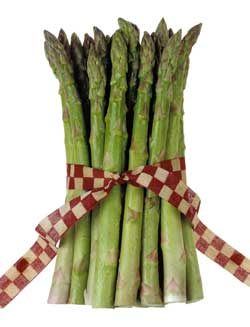

Asparagus is one of the easiest (and earliest) garden crops to grow? you only need to plant it once, then it will produce sweet,tender spears every spring for decades. To start a new bed, buybareroot asparagus crowns at garden centers in the spring. Then trythis harvesting tip to extend your fresh asparagus season by atleast two weeks:
Instead of the traditional harvesting method ? cutting all thespears when they are 6 to 8 inches long ? allow two or three sturdyspears to grow uncut. Research at Cornell University found that asthey leaf out, these 'mother spears' will send solar energy down tothe roots and stimulate the plants to produce more spears thantraditionally harvested ones.
Here are three more asparagus growing tips to try:
1. If you have a dry spring, keep your asparagus bedwell-watered.
2. When you have more asparagus than you can eat while it's stillfresh, just blanch the spears briefly in boiling water and pop themin the freezer.
3. Stop harvesting your asparagus once all the emerging spears arethinner than a pencil. This leaves the roots enough energy toproduce foliage that will capture solar energy through the summerand replenish the roots for the next season's crop.
|
 |
|
|